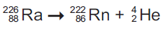
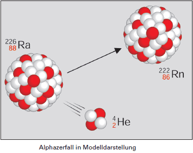
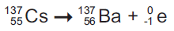
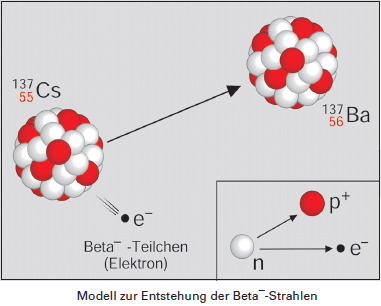
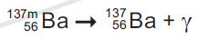
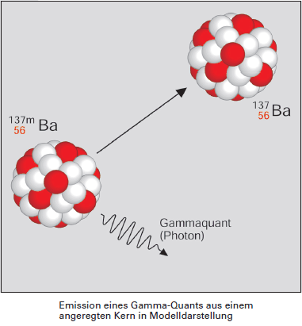
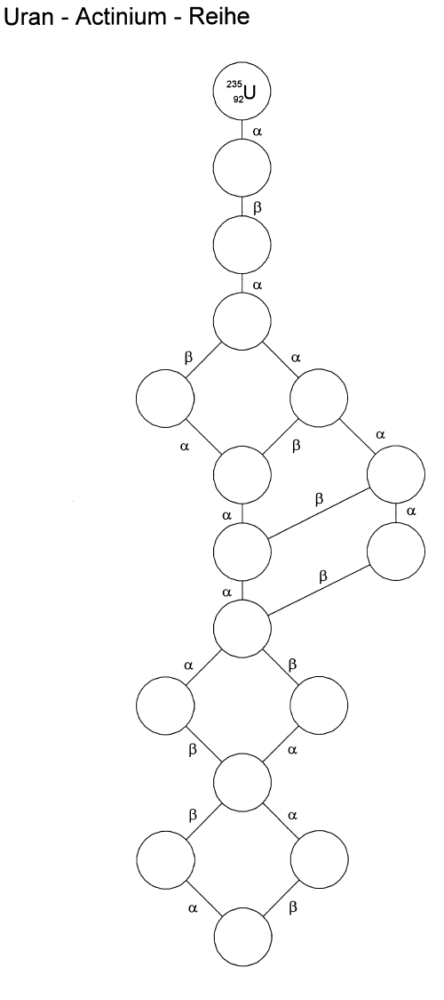
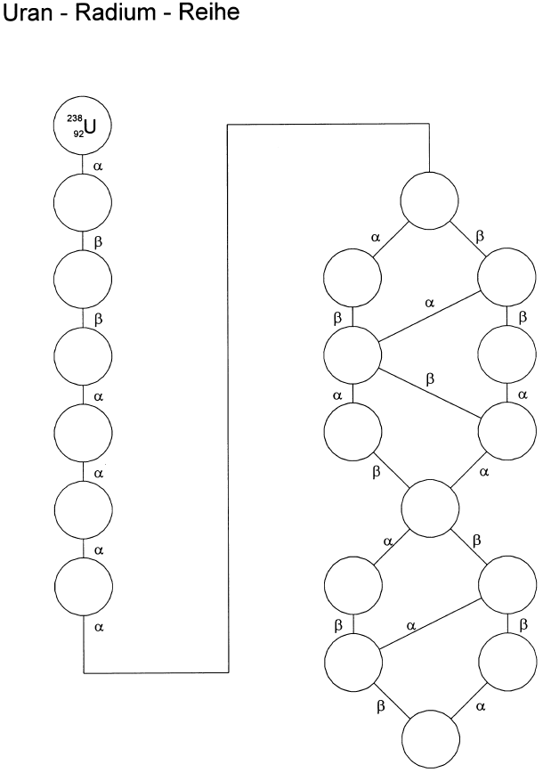
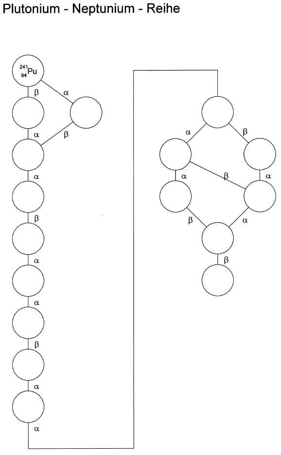
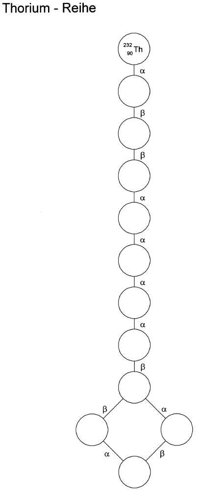

Die wichtigsten
Radionuklide, die in der Erde vorkommen, sind
Thorium-232, Uran-238 und
Uran-235.
Sie zerfallen in mehreren Stufen
zu inaktiven Bleiisotopen. |
|
|
|
1. Alphastrahlen |
Die beim
radioaktiven Zerfall von Atomkernen
ausgesandten Heliumkerne (2 Protonen, 2
Neutronen) werden Alphateilchen genannt. Als
Teilchenstrom bilden sie die
Alphastrahlen. Die
Anfangsgeschwindigkeit der austretenden
Alphateilchen beträgt etwa 15000 km/s.
Der Kern des
Radium-226 hat 88 Protonen und 138
Neutronen. Seine Kernladungszahl
beträgt demnach 88, seine
Massenzahl 226. Der Kern
ist nicht stabil, da die Kernkräfte die
abstoßenden Kräfte der Protonen
untereinander nicht vollständig aufheben
können. Der Kern hat deshalb das Bestreben,
in einen stabileren Zustand überzugehen. Das
geschieht in mehreren Stufen, von denen hier
nur eine dargestellt ist. Der Kern
schleudert einen Heliumkern heraus, wodurch
die Kernladungszahl um 2, die Massenzahl um
4 sinkt. Es entsteht das neue
Element Radon (Rn). Dieser Vorgang wird auch
Alphazerfall genannt.
Er kann durch eine
Kernreaktionsgleichung
beschrieben werden: |
|
 |
|
 |
|
|
|
|
2. Betastrahlen |
Beim
Betazerfall wird aus dem Kern eines
Radionuklids ein Elektron
abgegeben. Seine Geschwindigkeit kann
zwischen Null und nahezu
Lichtgeschwindigkeit liegen. Diese
Elektronen bilden dann die
Betastrahlen. Das ausgeschleuderte
Elektron stammt nicht aus der Atomhülle! Es
entsteht, wenn sich im Kern ein
Neutron in ein Proton und ein Elektron
umwandelt.
Da nach dem Aussenden
eines Betateilchen (eines Elektrons) der
Kern ein Proton mehr
besitzt, muss auch die
Kernladungszahl des neu
entstandenen Elements um eins höher liegen.
Die Anzahl der Kernteilchen
hat sich jedoch insgesamt nicht verändert,
wodurch die ursprüngliche Massenzahl
erhalten bleibt.
Reaktionsgleichung: |
|
 |
|
 |
|
|
|
|
3. Gammastrahlen |
Bei den
Kernumwandlungen kann eine energiereiche
Strahlung auftreten, die die gleiche Natur
wie das sichtbare Licht hat, nur
energiereicher als dieses ist. Sie trägt den
Namen Gammastrahlung.
Abgesehen von der Art des Entstehens ist sie
praktisch identisch mit der
Röntgenstrahlung. Die
Gammastrahlung wird - wie auch das sichtbare
Licht - in einzelnen "Portionen" (Quanten,
Photonen) abgegeben.
Die Gammaquanten
bewegen sich mit einer konstanten
Geschwindigkeit, der
Vakuumlichtgeschwindigkeit. Gammastrahlen
treten häufig bei Alpha- oder Betazerfall
auf. Nach dem Ausschleudern eines Alpha-
oder Betateilchens gibt der Atomkern noch
vorhandene überschüssige Energie in Form
eines oder mehrerer Gammaquanten ab. Durch
den Gammazerfall ändert sich der
Energieinhalt des Kerns, nicht
jedoch dessen Kernladungs-
und Massenzahl.
Reaktionsgleichung: |
|
 |
|
 |
|
|
|
|
4. Zerfallsreihen |
|
 |
|
|
Fülle die Reihe aus! |
 |
|
|
|
|
 |
|
|
Fülle die Reihe aus! |
|
|
|
|
|
 |
|
|
Fülle die Reihe aus! |
|
|
|
|
|
 |
|
|
Fülle die Reihe aus! |
|
|
|
|
|